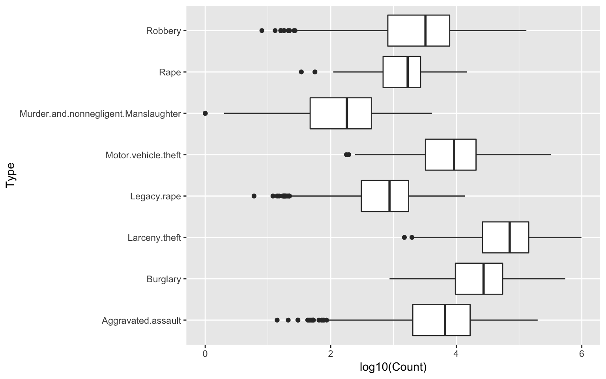

Example
p <- mpg %>% ggplot(aes(x = displ, y = cty, colour= factor(class))) + geom_point()
p + theme_grey()p + theme_bw()
Yumou Qiu
#devtools::install_github("heike/classdata")library(classdata)
library(ggplot2)ggplot2ggpy ggplot FunctionThe ggplot function is the basic workhorse of ggplot2
ggplot StructureThe ggplot function has the basic syntax:
ggplot(data, mappings) + geom_type(options)
aes()point, line, barggplot2aes allows us to specify mappings; scatterplots need a mapping for x and a mapping for y:
ggplot(data = fbiwide, aes(x = Burglary, y = Murder)) +
geom_point()ggplot(data = fbiwide, aes(x = log(Burglary), y = log(Murder))) +
geom_point()ggplot(data = fbiwide, aes(x = log(Burglary), y = log(Motor.vehicle.theft))) +
geom_point()Can map other variables to size, colour, shape, ….
ggplot(aes(x = log(Burglary), y = log(Motor.vehicle.theft),
colour=Year), data=fbiwide) + geom_point()ggplot(data = fbiwide, aes(x = log(Burglary), y = log(Motor.vehicle.theft), colour = Year)) + geom_point()ggplot(data = fbiwide, aes(x = log(Burglary), y = log(Motor.vehicle.theft), colour = State)) + geom_point()ggplot(data = fbiwide, aes(x = log(Burglary), y = log(Motor.vehicle.theft), size = Population)) + geom_point() Can facet to display plots for different subsets:
facet_wrap, facet_grid
ggplot(aes(x = Year, y = Murder), data=fbiwide) +
facet_wrap(~State, scale = "free_y") +
geom_point()facet_wrap and facet_gridfacet_grid has formula specification: rows ~ colsfacet_wrap has specification ~ variablesrowvar1 + rowvar2 ~ colvar1+ colvar2facet_grid) is written as ., i.e. rowvar ~ . are plots in a single column.
geom_boxplot in ggplot2 needs x and y variable (y is measurement, x is categorical)ggplot(data = fbi, aes(x = Type, y = log10(Count))) +
geom_boxplot() +
coord_flip()Histograms:
ggplot(fbiwide, aes(x = Motor.vehicle.theft)) +
geom_histogram(binwidth=5000) +
ggtitle("binwidth = 5000")Histograms:
ggplot(fbiwide, aes(x = Motor.vehicle.theft)) +
geom_histogram(binwidth=1000) +
ggtitle("binwidth = 1000")ggplot(fbi, aes(x = Type)) +
geom_bar(aes(weight= Count)) +
coord_flip()fbi data set to draw a barchart of the variable Violent Crime. Make the height of the bars dependent on the number of reports (use weight). Color bars by Type.fbi data set to draw a histogram of the number of reports. Facet by type, make sure to use individual scales for the panels.ggplot(aes(x = Violent.crime), data=fbi) +
geom_bar(aes(weight= Count, fill = Type)) + coord_flip()ggplot(aes(x = Count), data = fbi) + geom_histogram() +
facet_wrap(~Type, scales = "free")ggplot2ggplot2 provides defaults …default continuous colour scheme
library(tidyverse)
p1 <- mpg %>% filter(year == 2008) %>%
ggplot(aes(x = cty, y = hwy, colour = cyl)) +
geom_point()
p1 + scale_colour_continuous()default discrete colour scheme
p2 <- mpg %>% filter(year == 2008) %>%
ggplot(aes(x = cty, y = hwy, colour = factor(cyl))) +
geom_point()
p2 + scale_colour_discrete()scale_colour_discrete (scale_colour_hue) and scale_colour_continuous (scale_colour_gradient) are the default choices for factor variables and numeric variablesscale_colour_gradient (..., low = "#132B43", high = "#56B1F7", space = "Lab", na.value = "grey50", guide = “colourbar")
scale_colour_gradient2(..., low = muted("red"), mid = "white", high = muted("blue"), midpoint = 0, space = "Lab", na.value = "grey50", guide = "colourbar")
scale_color_hue (..., h = c(0, 360) + 15, c = 100, l = 65, h.start = 0, direction = 1, na.value = "grey50")
scale_colour_brewer(..., type = "seq", palette = 1, direction = 1)
library(RColorBrewer)
display.brewer.all()fill to map values to the fill colorscale_fill_gradient, scale_fill_gradient2, …scale_fill_hue, scale_fill_brewer, scale_fill_grey, …theme_grey (default), theme_bw, theme_light, theme_darktheme_set if you want it to apply a theme to every future plot, e.g. theme_set(theme_bw())ggthemes package defines additional themes: library(help = "ggthemes") lists all themesp <- mpg %>% ggplot(aes(x = displ, y = cty, colour= factor(class))) + geom_point()
p + theme_grey()p + theme_bw()p <- mtcars %>% ggplot(aes(x = wt, y = mpg, colour= factor(cyl))) + geom_point()
p + theme_light()p + theme_dark()library(ggthemes)
p + theme_excel() p + theme_fivethirtyeight()element_line, element_text, element_rect, element_blankaxis.line, axis.text.x, axis.text.y, axis.ticks, axis.title.x, axis.title.ylegend.background, legend.key, legend.text, legend.titlepanel.background, panel.border, panel.grid.major, panel.grid.minorstrip.background, strip.text.x, strip.text.yfor a complete overview see ?theme
mpg %>% ggplot(aes(x = manufacturer)) + geom_bar() +
theme(axis.text.x = element_text(angle=45, vjust=1, hjust=1))
rvest packageread_html gets all the information from a URL
library(rvest)
url <- "https://www.the-numbers.com/weekend-box-office-chart"
html <- read_html(url)
html## {xml_document}
## <html>
## [1] <head>\n<!-- Global site tag (gtag.js) - Google Analytics --><script ...
## [2] <body>\n<center>\n\t</center>\n\r\n\n\r\n<script>\r\n window.fbAsyn ...html_table extracts all tables from the sourced html into a list of data frames:
tables <- html %>% html_table(fill=TRUE)
length(tables)## [1] 2length() accesses the number of items in a list[[ ]] accesses each itemdim(tables[[1]])## [1] 1 3dim(tables[[2]])## [1] 36 10head(tables[[2]])## Movie Distributor Gross Change
## 1 1 new Glass Universal $40,586,000
## 2 2 (1) The Upside STX Entertainment $15,670,000 -23%
## 3 3 new Dragon Ball Super: Broly FUNimation $10,657,442
## 4 4 (2) Aquaman Warner Bros. $10,330,000 -40%
## 5 5 (4) Spider-Man: Into The Spider… Sony Pictures $7,255,000 -20%
## 6 6 (3) A Dog’s Way Home Sony Pictures $7,110,000 -37%
## Thtrs. Per Thtr. Total Gross Week
## 1 3,841 $10,567 $40,586,000 1
## 2 3,320 $4,720 $43,983,439 2
## 3 467 $22,821 $21,048,481 1
## 4 3,475 $2,973 $304,336,848 5
## 5 2,712 $2,675 $158,256,385 6
## 6 3,090 $2,301 $21,278,496 2Most tables need a bit of clean-up:
names(tables[[2]])## [1] "" "" "Movie" "Distributor" "Gross"
## [6] "Change" "Thtrs." "Per Thtr." "Total Gross" "Week"names(tables[[2]])[1:2] <- c("Rank", "Rank.Last.Week")
str(tables[[2]])## 'data.frame': 36 obs. of 10 variables:
## $ Rank : chr "1" "2" "3" "4" ...
## $ Rank.Last.Week: chr "new" "(1)" "new" "(2)" ...
## $ Movie : chr "Glass" "The Upside" "Dragon Ball Super: Broly" "Aquaman" ...
## $ Distributor : chr "Universal" "STX Entertainment" "FUNimation" "Warner Bros." ...
## $ Gross : chr "$40,586,000" "$15,670,000" "$10,657,442" "$10,330,000" ...
## $ Change : chr "" "-23%" "" "-40%" ...
## $ Thtrs. : chr "3,841" "3,320" "467" "3,475" ...
## $ Per Thtr. : chr "$10,567" "$4,720" "$22,821" "$2,973" ...
## $ Total Gross : chr "$40,586,000" "$43,983,439" "$21,048,481" "$304,336,848" ...
## $ Week : int 1 2 1 5 6 2 3 5 5 4 ...box <- tables[[2]] %>% mutate(
Gross = parse_number(Gross),
Thtrs. = parse_number(Thtrs.)
)
head(box)## Rank Rank.Last.Week Movie Distributor
## 1 1 new Glass Universal
## 2 2 (1) The Upside STX Entertainment
## 3 3 new Dragon Ball Super: Broly FUNimation
## 4 4 (2) Aquaman Warner Bros.
## 5 5 (4) Spider-Man: Into The Spider… Sony Pictures
## 6 6 (3) A Dog’s Way Home Sony Pictures
## Gross Change Thtrs. Per Thtr. Total Gross Week
## 1 40586000 3841 $10,567 $40,586,000 1
## 2 15670000 -23% 3320 $4,720 $43,983,439 2
## 3 10657442 467 $22,821 $21,048,481 1
## 4 10330000 -40% 3475 $2,973 $304,336,848 5
## 5 7255000 -20% 2712 $2,675 $158,256,385 6
## 6 7110000 -37% 3090 $2,301 $21,278,496 2Sometimes data on the web is not structured as nicely … e.g. let’s assume we want to get a list of all recently active baseball players from Baseball reference

vignette("selectorgadget")url <- "http://www.baseball-reference.com/players/a/"
html <- read_html(url)
html %>% html_nodes("#div_players_ a") %>% head()## {xml_nodeset (6)}
## [1] <a href="/players/a/aardsda01.shtml">David Aardsma</a>
## [2] <a href="/players/a/aaronha01.shtml">Hank Aaron</a>
## [3] <a href="/players/a/aaronto01.shtml">Tommie Aaron</a>
## [4] <a href="/players/a/aasedo01.shtml">Don Aase</a>
## [5] <a href="/players/a/abadan01.shtml">Andy Abad</a>
## [6] <a href="/players/a/abadfe01.shtml">Fernando Abad</a>We want to get access to pieces of the links:
html_text allows us to get text out, html_attr let’s us access an attribute of an html node, html_attrs extracts all attributes of an html node:
html %>% html_nodes("#div_players_ a") %>% html_text() %>% head()## [1] "David Aardsma" "Hank Aaron" "Tommie Aaron" "Don Aase"
## [5] "Andy Abad" "Fernando Abad"html %>% html_nodes("#div_players_ a") %>% html_attr(name="href") %>% head()## [1] "/players/a/aardsda01.shtml" "/players/a/aaronha01.shtml"
## [3] "/players/a/aaronto01.shtml" "/players/a/aasedo01.shtml"
## [5] "/players/a/abadan01.shtml" "/players/a/abadfe01.shtml"h1 = html %>% html_nodes("#div_players_ a") %>% html_attr(name="href")
length(h1)## [1] 593h1[1]## [1] "/players/a/aardsda01.shtml"h0 = "http://www.baseball-reference.com"
url.player = paste(h0, h1[1], sep = "")
url.player## [1] "http://www.baseball-reference.com/players/a/aardsda01.shtml"Use the SelectorGadget on the website for David Aardsma
url <- "http://www.baseball-reference.com/players/a/aardsda01.shtml"
html <- read_html(url)
# good first start, but not good for further processing
h2 = html %>% html_nodes(".stats_pullout p , h4")
h3 = html %>% html_nodes(".p3 p , .p2 p , .p1 p , .stats_pullout strong , h4")# better: pull out individual vectors
html %>% html_nodes("h4") %>% html_text()## [1] "SUMMARY" "WAR" "W" "L" "ERA" "G" "GS"
## [8] "SV" "IP" "SO" "WHIP"html %>% html_nodes(".stats_pullout p") %>% html_text() ## [1] "Career" "1.7" "16" "18" "4.27" "331" "0"
## [8] "69" "337.0" "340" "1.421"